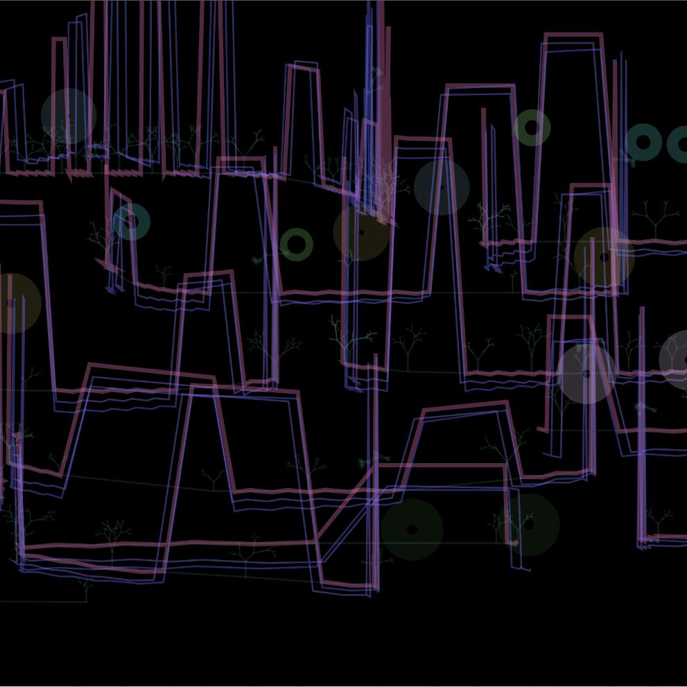
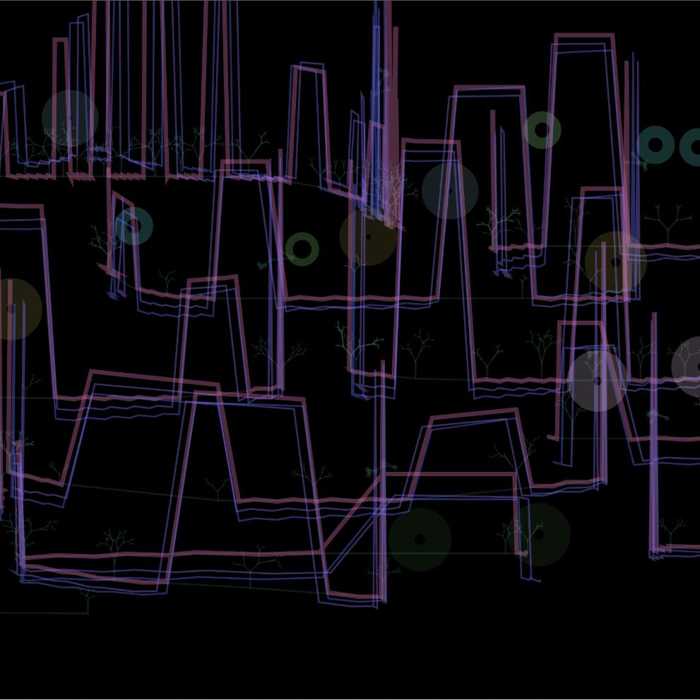

Vimeo Video
Video from this Memory
Images
 

First of all a simplification of the building form. Street formation is related to roads. The set of points at which the mouse passes is obtained, these point sets are connected to form roads, and trees are generated at the location of each point in the point set, each tree being generated using a recursive approach. The building can change its form by changing the approximate height and width of the resulting building. Based on the paths, a number of nodes are generated using vectors to move along the road, with the movement of each node forming a different trajectory, and by adjusting the relative positions of the nodes the building and the lines around the building are generated. Save the location of the roof vertices of each building when generating the buildings，By randomly changing the x and y coordinates at this position and drawing other patterns with the changed coordinates, different effects can be generated, such as urban neon and memory blur effects. Through the different effects and the randomly generated streets, the video changes from the blurred effect of the city in memory to the modern reality of the modern city. This is a way of evoking the memory of the city. No matter how much time has passed, we are reminded of the past when we see familiar streets and buildings.